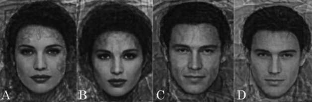
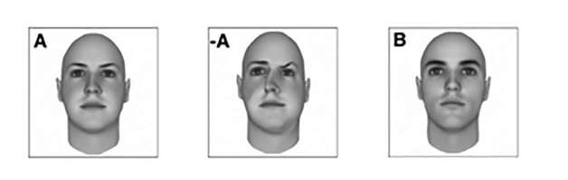
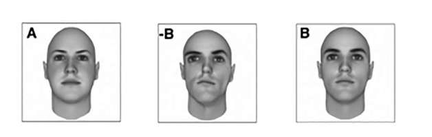

如果彼得·巴克斯的故事说服了你，你愿意放宽条件，那么下一步便是要学会如何吸引心仪的目标了。
选择伴侣是一生中最重要的决定之一——未来的幸福极大程度上取决于你选择和谁安定下来。我们肯定都很看重一些品质：愿意妥协，具备养家的能力，温暖、宽容并支持你。可你是否想过，如果这些品质真的如此重要，我们又为何还执迷于对方的外表呢？
丰盈的嘴唇和宽厚的肱二头肌或许在当下赏心悦目，但凌晨四点钟需要给婴儿换尿不湿或者六十年后你需要换导尿袋的时候，它们就派不上用场了。然而从人类文明诞生时起，我们就格外在意外表。难道全世界的人都误以为美貌这个浮夸而短暂的特征是最重要的吗？美是人类历史上的永恒话题，或许它背后有更微妙的东西。
科学家、数学家和心理学家在过去的几个世纪里投入了大量心力，试图定义“美”那难以捉摸的本质。虽然很多理念是基于科学而非数学，但你有必要知道在试图让对方为你倾心时你面临的是什么，以及为何美绝不流于表面。而我并不是主张你跑出去买张新的面孔——我们会在本章后半部分探索该如何利用人类的感知规律，让我们不必在脸上动刀也能更具吸引力。
人们对美的概念各不相同，因此才会乐此不疲地讨论他人是否具有吸引力。不过少数的幸运儿——主要集中在好莱坞——他们的美丽面孔似乎无可非议。一定有些基本条件是人们一致认可的。如果我们潜意识里就懂得这些规律，那么就能轻易指出那些脸庞出众的原因。
有些人认为我们已经找到了美丽的确切原因，那是一个叫作“黄金比例”的数学概念。
如果你没听说过黄金比例，请让我向你介绍一下，它是一个无理数，约等于1.61803399……通常用希腊字母Ф表示。它的概念来自几何学，然而人们发现，无论是在花瓣数量还是在兔子繁殖速度等方面，它都适用。
人们还常常把它和人类的美联系起来。你或许听说过，在一张完美的脸蛋上，嘴的长度应该是鼻子底部宽度的约1.618倍，眉毛的长度应该是眼睛长度的约1.618倍，以此类推。
乍一听，貌似有道理。两眼间距太宽或太窄并不符合大多数人的审美。把黄金比例运用在人脸上颇具说服力。整形外科医生斯蒂芬·马考特甚至研制出一个黄金比例面具，以此帮助长相“比较困难”的客人设计整形方案。把这个面具叠放在安吉莉娜·朱莉和伊丽莎白·泰勒等知名美女的脸上，她们的五官特征都能与这个面具相吻合。
你会在诸多美容博客和视频网站上看到关于黄金比例与面容关系的理论。不过只有一个问题——黄金比例并不是可靠的科学。
真正的科学，需要你竭力反驳自己的理论。越多尝试，越多失败，越多证明自己的错误，才越能找到支持自己理论的证据。虽然我也很希望能用一个数字来解释美，然而测量千万张脸蛋上的各种比例，直到找到符合自己理论的例子——这种方法根本就不是科学。
用黄金比例来定义美的问题在于，如果你足够努力地寻找规律，便一定能找到，尤其是当你的定义不那么精确时。你如何判断耳朵的“起始点”，或鼻子的“最底端”？你又怎样才能精确到黄金比例小数点后的第五位，甚至更多？
或许有朝一日会有人找到人体与这个数字相关的恰当理由。但在此之前，就如斯坦福大学的数学家基思·德夫林所说，用黄金比例来定义美就像是一个“不愿消失的神话”。
不过还好，本书只意在说明一些的确与美有关的数学概念。这些概念各自为人类在进化过程中更重视潜在伴侣某些特征的原因做出了解释。
最早发现的理论之一便是人们对平均脸形的偏爱。19世纪以来，研究者发现把某一族群成员的面部图像重叠，形成的便是一张被普遍认为具有吸引力的平均脸。每个族群都有不同的审美，但最终当你抹平了大下巴、招风耳、长额头后，得到的就是个彻底平均的俊男脸或靓女脸（尽管或许没什么特点）。
这里提出的理论是，我们在择偶时往往不喜欢对方的脸形不同寻常，生怕他们奇怪的突变基因会遗传给后代。
对健康与遗传的考虑是审美中反复出现的主题。面部对称性也是美的重要特征。面部自然对称的人在魅力值调查中总是会得到很高的评分。然而我们以对称为美[1]，这实际上只是做出了对健康状况的认可罢了。
我们小时候每次咳嗽或感冒都会对发育造成细微的影响，导致轻微的不规则生长。一只眼睛或许比另一只高出几毫米，一个鼻孔比另一个略大一丁点儿。影响或许极小，但足够让人在判断美丑时从潜意识中就能发现这些线索。我们在潜意识中都认为，稍不对称的五官很有可能表明免疫系统有些小毛病。终归你希望自己的子嗣尽可能健康。
生物进化因素对审美的影响还不止于此。它与人们普遍认为好看的特征也息息相关。尖下巴、大眼睛、下嘴唇稍丰满的女性在许多不同文化中都被认为是最美的。而浓眉毛、下巴轮廓有棱有角的男性则普遍被认为是有魅力的。这些特征或与激素分泌水平高低有关，因此才格外重要。
青春期时，女性的激素分泌会直接影响面部特征的发育。雌性激素水平高的女性会有丰满的嘴唇和较大的腰臀比例，而雄性激素——也就是类固醇激素——水平低的女性会保留住儿时短而尖的下巴，而更平的眉毛也使她们的眼睛看上去更大。
而且——毫不意外地——女性激素的平衡也与生育能力成正相关。
另一方面，男性在青春期时则需要睾丸素的支持才能发育形成肌块、宽下巴和清晰的眉骨，而清晰的眉骨自然会使眼睛看上去更加深邃。睾丸素这种雄性激素也与生育能力息息相关。
所以当我们对一个下颌宽硕的男人或嘴唇丰盈的女人倾心时，我们只是遵从了生物繁衍进化的需求而已。这也解释了女人为什么会擦口红，因为这会使男人渴望与她共育后代。
不过尚且不必跑去整容。这些规律看似具有普遍性，但依然有很大的空间允许个人偏好的存在。不论前面说了多少有关对称性与激素的话题，有时被评为最有魅力的往往是打破了这些规律的人。
比如说，对称性规律似乎只适用于人像。在现实生活中，很多人也会被不对称的特征吸引。这些特征不仅让人看上去更有特点，还显得更真诚。76%的人在讲话时嘴部右侧活动要比左侧明显。你若不仔细观察便不会发觉，然而人们似乎潜意识中认为不对称的表情更自然、更具吸引力。
同样，面部性别特征越明显便越有魅力这种说法也不正确。每个人在寻找伴侣时都会被不同的性格特征所吸引，虽然不是相面术，但已有证据显示，我们偏爱的配偶面部特征能反映出我们对性格的偏好。
举例来说。睾丸素是方下巴和粗眉毛的成因，也是致使人性格坚定、好斗的激素。然而有些女性喜欢更随和的伴侣。同样，对于喜欢女性更强势的男性来说，大眼睛和小下巴会显得过于柔弱。有的人喜欢更“带劲儿”的伴侣。
你会惊讶地发现，通过面容洞悉性格特征是多么容易，大多数人在不经意间就能做到。看看下列照片，哪个男人和女人看上去更坚定？哪个更随和？

如果你认为B和D更坚定，那么你和90%的答题者的想法是一致的。这些图片是合成的。偏爱坚定性格的人群选出的最具魅力的面孔被合成为B与D。同样地，A与C是由喜欢随和伴侣的人群所青睐的照片合成的。其他性格特征也得到了类似的印证：偏爱伴侣性格外向的人所选出的最具吸引力的面孔，恰巧是多数人认为属于外向性格的面孔；这对于偏爱内向性格或神经质性格的人同样适用。真所谓：情人眼里出西施。
吸引力科学的内容远不止这些[2]，然而归根结底，美存在于公式之外。每个人的梦中情人都着实是独特的，因此并不存在数学解答。这一切表明，没有必要纠结于此。不如把精力用在培养令人赞叹的闲聊技巧和致命魅力上。
所以说，改变容貌就能获得大众欣赏或许不太可能。不过在择偶时，个人选择会起到重要的作用。选择意味着概率，而概率就意味着数学要派上用场了。
有人在酒吧接近你或是在派对中接受你的搭讪时，他并非是在拿你和世界上其他所有人的长相做对比。没有人介意你长得不像乔治·克鲁尼或是海蒂·克鲁姆。他们只是根据当时可及的资源做出选择，而这其中或许可以让数学概念助你一臂之力。
在定义了公式中的每一个项之后，我们便可以创造用来解释选择的语言了，那便是“离散选择理论”。
尽管我们幻想着自由意志，然而在做决定时往往会遵循一些简单的规则。这些规则的存在意味着，操控人们的选择是相当容易的。就如经济学家丹·艾瑞里所述，我们都有些“可预测的非理性”。
想象一下你正在电影院买零食。或许一小桶爆米花卖5美元，大桶则是让人望而却步的8.5美元。大桶貌似非常贵，直到收银员告诉你大桶只比中桶贵0.5美元。神志清醒的人都不会在多花几毛钱就能买到大桶的情况下去购买中桶。然而价目单上加入中桶选项会极大地影响你的决定：它会使大桶爆米花看上去划算很多。
这便是经济学中所谓的“诱饵效应”。它展示了无关选项的存在是如何改变你看待选择的方式的。这招数几十年来一直被市场营销专家所利用，然而你也可以运用它使自己更具吸引力。
丹·艾瑞里在其2008年出版的书中解释了诱饵效应是如何影响人们审美的。
艾瑞里在他的学生中做了调查，选出了魅力相当的两张男性面孔。我们称其为亚当和本。艾瑞里用图像处理软件制作出了丑版的亚当和本，然后将其头像图片分成两组来测试他的理论。


第一组里有正常的亚当和本的照片，还加入了丑版的亚当（请参见情形一）。第二组里同样有亚当和本的照片，但这次加入的是丑版的本（请参见情形二）。
他把这两组图片发给了600个学生，其中一半人拿到了第一组图片，另一半拿到了第二组。这些学生要选出他们认为最具魅力的一张面孔。
没人选择丑版图片，然而它们的存在却产生了戏剧性的影响。
在有丑版亚当的一组中，75%的参与者认为原版亚当最具魅力。而在有丑版的本的那一组中，结果完全相反：75%的参与者认为原版的本最好看。
在这两组图片里，丑版的亚当和本都分别使他们的原版显得更具魅力，就如诱饵效应所预见的那般。
所以使自己显得更具魅力的方法便一目了然。当你在派对中与潜在伴侣交谈时，选择一个和你外形尽可能相似但略逊于你的人一同出现。他们的存在会使你更具吸引力。
倘若你觉得这样做有些无情，请记住每个人都会本能地做出这些判断。数学是大自然的语言，倾听数学的声音，我们能更深入地理解人类行为的方式和原因。
归根结底，就如萧伯纳所述：爱即是夸大女人之间的差别。所以不要羞于利用诱饵效应。
[1] 这里说的是反射对称而非旋转对称，后者对于长相来说可不是一件好事。
[2] 请参考诸如戴维·佩雷特《在脸上》（In Your Face）之类的著作，获得优质、全面的信息。